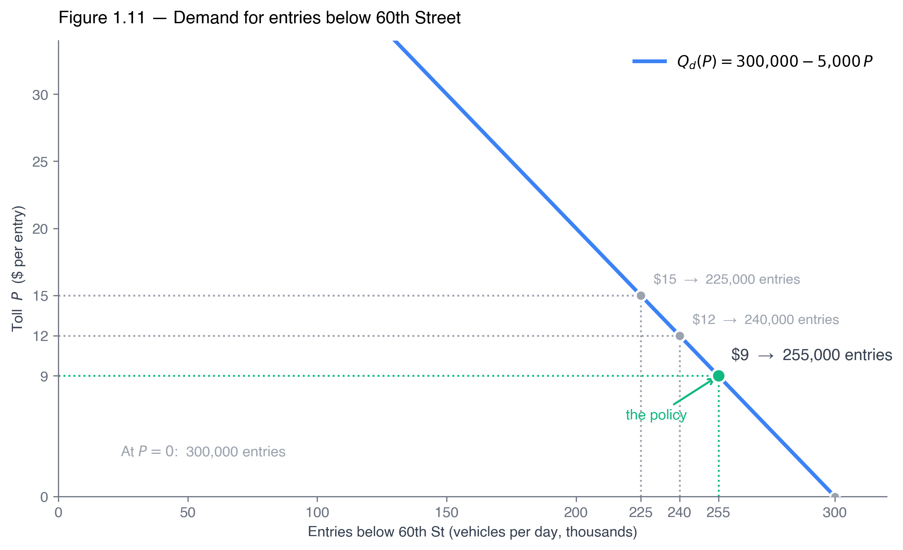
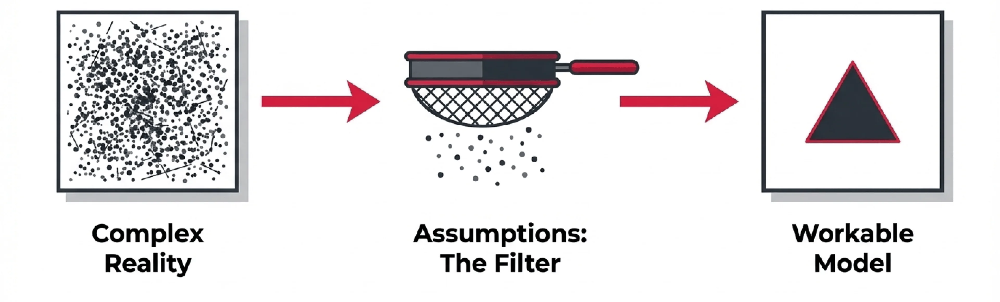
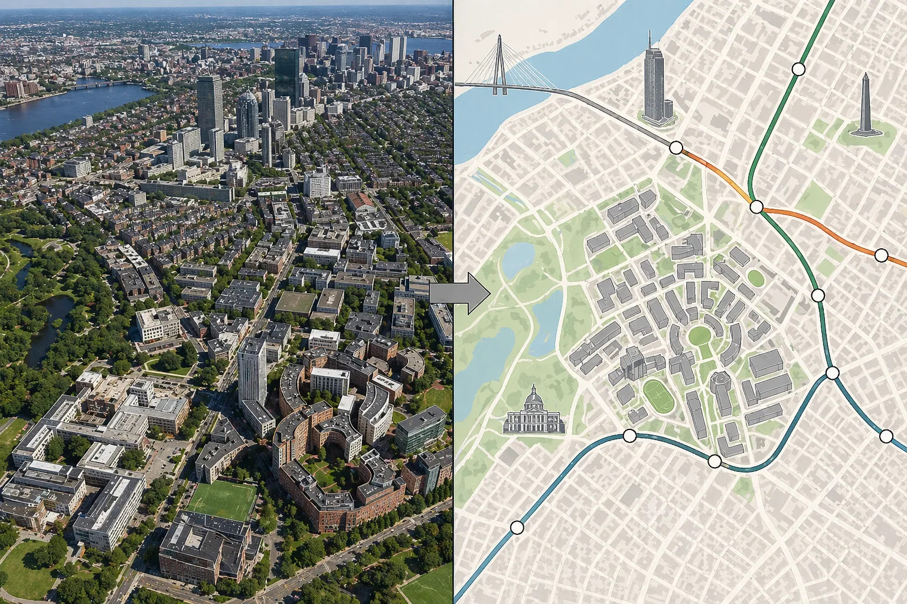
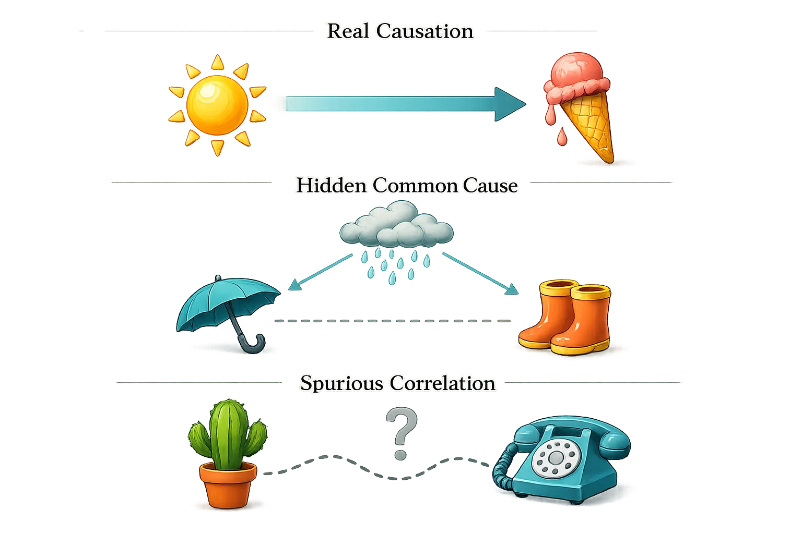

A \$9 toll switched on below 60th Street. Any Principles student can draw which way traffic moves. This course is about the other question — how much, and how we'd measure it.
Dr. Richeng Piao
Department of Economics
Northeastern University — Opens Part I
Learning Objectives
By the end of class today, you will be able to…
1
Frame almost any microeconomic question as optimization under constraint: \(\max f(x)\) subject to \(g(x)\le 0\).
2
Use the derivative as the formal meaning of “marginal,” and read an optimum off \(f'(x^{*})=0\).
3
Judge a model by what it usefully leaves out — would relaxing an assumption change the result you care about?
4
Separate correlation from causation, and positive claims from normative ones.
From Principles to Theory: Arrow → Number
ECON 1116 — the arrow
A tax shifts supply up — price rises, quantity falls
Marginal benefit vs marginal cost, compared in one-unit steps
Diagrams give the direction of the change
ECON 2316 — the number
Solve the optimization to find how much — the exact \(P^{*},\,Q^{*}\)
Marginal \(=\) the derivative; the optimum is \(f'(x^{*})=0\)
And then measure the effect in data — is the number real?
Three ideas organize the whole book. (1) Almost every question is optimization under constraint. (2) Turning a graphical prediction into a numerical one needs calculus — hence a Calculus Corner in every chapter. (3) Modern micro treats those numbers as empirical objects to be measured, not just derived.
Scarcity: The Economic Problem
Recall from Principles — 1116 §1.1
Before we start: what single problem do a student, a household, a firm, and the MTA all share?
Economics
The study of how individuals, firms, and societies make choices under scarcity.
Scarcity
The problem of having too many wants but too few resources to achieve them all.
Scarcity forces choices. If you could have everything you wanted, exactly when you wanted it, economics would not exist. It is the one problem every economic agent faces.
This course is microeconomics — we zoom in on the individual decision-maker (a consumer, a firm, one market), not macroeconomics’ economy-wide aggregates (GDP, inflation, unemployment).
Scarcity Is Not Rarity
Labour · land · capital · enterprise — the economy's actual budget.
Rarity — absolute quantity
A pink diamond is rare. But if you do not own one, it never touches your day — it forces no choices.
Scarcity — universal
June 2026: after the SpaceX IPO, Elon Musk becomes the world's first trillionaire — about \$1.3T. He still cannot buy more engineers, more land, or more hours than exist.
Money is a claim on resources, not a resource. Even \$1.3 trillion only bids for what already exists — so the question is never “how do we get more?” but “how do we get the most out of what there is?” That question has a name: optimization under scarcity.
So How Do We Allocate Something Scarce?
Allocative efficiency: a scarce resource ends up with whoever values it most — the right goods reach the right people, and the last unit used is worth at least what it costs society.
Markets are usually how
A price steers a scarce resource to its highest-valued use — no central planner deciding who deserves it. This is one of the most reliable ideas in economics (and Ch 10 will say exactly when it works).
The MTA's goal
Put a price on scarce road space so the trips worth most get in — the delivery on a deadline drives; the optional joyride waits. That is allocative efficiency in action.
We formalize allocative efficiency — and when markets reach it — in §6 and Ch 10. (When they fail: Ch 17. Fittingly, congestion is itself a market failure the toll is fixing.) First, the headline number.
The Nine-Dollar Question
After decades of proposals and lawsuits, the first U.S. cordon toll goes live.
The policy
Jan 5, 2025 — NYC switches on the first U.S. congestion-pricing program. Gantries below 60th St charge a peak \$9 to enter the central business district.
A toll on a good with a congestion externality. Any Principles student can draw it — effective supply shifts up \$9, and trips fall.
But drawing the direction was never the hard part.
Poll #1 — What Can the Diagram Actually Tell You?
You can draw the toll perfectly: effective supply shifts up \$9, trips fall. The MTA had four questions on its desk. Which one does your diagram answer?
A) Will the number of trips into the zone fall?
B) Will traffic fall enough to keep ambulances moving?
C) Will the revenue cover a \$15B capital plan?
D) Should the toll be \$9, \$12, or \$15?
30 sec to vote
Answer: A — and Only A
The diagram gives you a sign: trips fall. It cannot tell you how far. B, C and D are the three constraints the MTA actually had to satisfy — and every one of them is a number, not an arrow.
The takeaway: Principles got you the arrow. Everything that made this decision hard lives in the magnitude — and that is what this course is for.
It Needed a Number, Not a Direction
The MTA wasn't asking the direction. It needed a number: how much does traffic fall at \$9? At \$12? At \$15? Bond a \$15B capital plan against the revenue — that forces a minimum. Keep ambulances moving — another minimum. Don't enrage commuter-belt voters — a ceiling.
First-month data came fast. Graphs told the MTA the arrow. Calculus — arithmetic on real elasticities — told them where to stop.
\$9
peak toll below 60th St
~1M
fewer entries, first month
+7%
subway & bus ridership
~\$550M
first-year revenue tracking
This chapter is an extended answer to one question: how do economists get from the arrow to the number? The toll returns twice today — as Walkthrough 1.5 (the revenue arithmetic), and again in §1.3 where we check what actually happened.
A Toll Is a Price — How Far Does Traffic Fall?

A toll is just a price. Road space below 60th St has a demand curve like anything else.
The curve tells you entries fall. It cannot tell you whether \$9 is the right number — that depends on what the MTA is trying to maximise.
Straight-line demand is an approximation — chosen so the arithmetic stays clean.
We put a number on it in Walkthrough 1.5, then drive the curve in the Toll-Revenue Explorer.
§1.1
The Economic Problem
Optimization under scarcity — one template, every chapter
Specialization and the gains from trade. A deli sandwich costs a few dollars because countless specialists — wheat farmers, beekeepers, dairies, bakers, toolmakers — each do the one thing they do best, then exchange.
Markets make it possible. Prices let specialists who will never meet coordinate — turning specialization into a sandwich you can actually buy.
No one designed that chain. No one runs it. Every market in this book is machinery for coordinating specialization — and the next slide draws the whole thing as one loop.
The Simplified Economy: Circular-Flow Diagram
Think of something you bought today — a coffee, a bagel, a snack. You will never meet the farmer who grew the beans, the baker, or the barista. Yet it reached you.
Millions of strangers, each pursuing their own ends, coordinated by prices — with no one in charge. Adam Smith called it the invisible hand.
To make a system this big and decentralized analyzable, economists lean on a few assumptions about how agents behave.
Three Working Assumptions
Intermediate micro leans on these far harder than Principles did. Every model in the book rests on them.
1 — Agents optimize
Choose the best feasible option, not merely a good-enough one.
2 — Respond at the margin
Change a price, wage, or payoff and behavior adjusts — the adjustment is what calculus computes.
3 — Largely self-interested
Each pursues its own objective — yet prices can still coordinate them into a coherent outcome.
These are baselines, not laws of nature. Behavioral economics is all about where real people systematically break them.
Two Agents, the Same Problem
Consumer (you)
Wants: the most utility (satisfaction) from the bundle she buys.
Limited by: her income — the budget.
Formalized in Chapter 5.
Firm (business)
Wants: the most profit — which means producing efficiently, at least cost.
Limited by: its resources — funding, investment, inputs.
Formalized in Chapters 7–9.
Different objective, different constraint — but the identical structure: maximize something subject to a limit. One template covers both.
From Figures to Functions
A function is a machine that turns inputs into an output, written \(y = f(x)\) — and it captures how the pieces actually connect.
weight loss
hours working out
f
pounds lost
consumer
concert ticketsramen bowls
f
happiness (utility)
producer
baristasespresso machines
f
cups of coffee
Every model in this book is a function we then optimize — the consumer maximizes utility, the firm maximizes output/profit. That is the template on the next slide.
Choose the feasible option \(x\) that makes the objective \(f(x)\) as large as possible, subject to a constraint that encodes the scarcity. Each chapter just changes the labels:
Objective \(f\)
Constraint \(g\)
Chapter
utility
budget line
Ch 5
profit
production fn
Ch 9
social welfare
pollution budget
Ch 17
Recall from 1116 — §1.1–1.2
The constraint \(g\) is the scarcity (see the opening slides). Opportunity cost is the next-best alternative forgone (explicit + implicit). In Principles we named opportunity costs in words; here we quantify the tradeoff with a number.
Application — Harvard & MIT Go Tuition-Free (2025)
From 2025–26, Harvard made tuition free under \$100K family income and waived full cost of attendance (over \$82K/yr) under \$200K. It's a textbook constrained-optimization problem:
Objective
maximize access / yield / socioeconomic diversity
Instrument
the aid schedule — expected family contribution at each income
Constraint
a finite aid budget (endowment + higher-income tuition)
Lowering the threshold raised enrollment in the \$50K–\$100K band, dropped its average family contribution to zero, and raised total outlay. Holding the budget fixed, Harvard implicitly judged the extra access worth more than the next-best use of the marginal dollar.
This is the exact decision logic we formalize in Chapter 5 with the Lagrangian — one tool for every problem of this shape, from tuition-waiver rules to a consumer's choice between coffee and rent. Optimization is not confined to firms: households, governments, and students all run it.
MIT ran the same play. In Nov 2024 it made tuition free for families under \$200K (up from \$140K) and a full ride — tuition, housing, dining, fees — under \$100K, backed by ~\$167M in need-based aid. Same objective, instrument, and constraint; different thresholds. [MIT News]
Walkthrough 1.1 — A Student's Time Budget
Problem. Maya splits 97 free hours between study \(S\) and paid work \(W\) at \$18/hr. Study's value falls in blocks: \$30/hr (hrs 1–10), \$20 (11–20), \$15 (21–30), \$0 after. How should she split the 97 hours?
Solve it in steps:
1. List each study block's marginal value (MV).
2. Compare each block to the flat \$18 wage.
3. Give each hour to whichever pays more at the margin — study while MV beats the wage.
Study block
MV/hr
vs \$18 wage
1–10
\$30
study
11–20
\$20
study
21–30
\$15
work
31+
\$0
work
Study beats the wage through hour 20; at hour 21 its value drops below \$18.
Walkthrough 1.1 — Solution
Study wins through hour 20 (\$20 > \$18); at hour 21 it drops to \$15 < \$18 — the crossover.
The last hour of study is worth as much as the last hour of work — this compare-at-the-margin, stop-at-the-crossover rule is the marginal thinking we formalize in §3. Raise the wage to \$25 and the switch flips to hour 11 — higher wages crowd out studying. In Ch 5 we swap the step function for a smooth utility function and solve the same problem with the Lagrangian. Maya recurs in Chs 5, 6, and 19.
The Marginal Is the Slope of the Tangent
Marginal cost of the \(q\)th unit \(\approx C(q)-C(q-1)\) — the slope of a secant. Shrink its span to zero and the secant becomes the tangent:
\[ MC(q) = \frac{dC(q)}{dq} \]
Harmless formula, big consequences. "Where should the firm stop?" becomes "where is \(\frac{dR}{dq}-\frac{dC}{dq}=0\)?" — a one-line solve that in Principles needed a hand-drawn diagram or an exhaustive table.
The same first-order logic runs the rest of the book: \(p = MC\) in Ch 9, \(MR = MC\) in Ch 11, and \(f'(x^{*}) = 0\) (the FOC) in every optimization from Ch 5 on.
Recall from 1116 — §1.3
A marginal quantity is the change in a total from one more unit — compared in discrete one-unit steps in Principles. Here it is almost always a derivative: if total benefit is \(B(q)\), marginal benefit is \(MB(q)=dB/dq\). Cleaner algebraically, sharper intuitively.
§1.2
Models and Evidence
Simplified maps — useful because they leave things out — and how to judge a claim
Deciding What to Leave Out
Reality is billions of interacting decisions — no one measures them all at once. Economists look through models: deliberately simplified maps that keep only what matters for the question at hand.

Assumptions are the filter. Not a claim the world is simple — a choice about what to ignore so the forces you care about stand out.
A Model Is a Subway Map, Not a Photograph

Useless for walking. Perfect for deciding where to change trains.
A good model picks the actors and their objectives, the environment (fixed / variable / random / strategic), and — hardest — what to ignore.
The map keeps
station order · interchanges · which line
The map throws away
true distances · street geometry · everything above ground
Heads Up 1.4 — models are tools, not portraits
Don't ask “is this assumption true?” (almost none are) — ask “would relaxing it change the result I care about?” Chs 11–17 exist to relax the perfect-competition assumptions, one at a time.
What We Assume — and Where We Relax It
Consumer theory · Chs 4–6
Preferences are complete, transitive and stable. Prices are known. Income is fixed.
Producer theory · Chs 7–9
Firms minimise cost and maximise profit. Technology is given.
Perfect competition · Ch 10 — the benchmark: many small firms · identical goods · free entry · full information · price-taking.
Then relax one at a time
Ch 11–12
drop price-taking → one seller sets the price
Ch 13–14
drop rivals ignored → strategic interaction
Ch 15
drop outcomes known → risk and expected utility
Ch 16
drop everyone knows the same → lemons, signalling
Ch 17
drop the decider bears all costs → externalities
Correlation Is Not Causation
When \(X\) and \(Y\) move together, the data alone can't tell you which story is true. Three very different worlds produce the same scatter:
Real causation — \(X\) genuinely drives \(Y\). The sun melts the ice cream.
Hidden common cause — a third variable \(Z\) drives both. Rain brings out umbrellas and boots; neither causes the other.
Coincidence — no link at all, just chance or a shared time trend. A cactus and a telephone.
A correlation coefficient can't tell these apart — only a research design can.

Positive vs. Normative
Positive — what is
“At \$9, about a million fewer vehicles entered.”
Checkable against data. Can be wrong.
Normative — what ought
“The toll should be \$9.”
Needs a value judgement. No dataset settles it.
This course is mostly positive. It sharpens normative arguments — it does not decide them.
§1.3
Back to the \$9 Toll
The opening question, answered with the tools we just built
What Actually Happened at \$9
Entries fall the month the toll switches on — and stay down.
~1M
fewer entries, month 1
+51%
Holland Tunnel speed
The forecast said traffic would fall. It did — and now we know by how much.
Walkthrough 1.5 — The MTA's Revenue Arithmetic
Problem. Daily entries \(Q_d(P)=300{,}000-5{,}000P\). (a) Revenue at \(P=9\) and \(P=12\)? (b) Which toll raises the most? (c) Why might the MTA pick below it?
(a) Your turn. \(R(9)=9(255{,}000)=\$2.30\)M; \(R(12)=12(240{,}000)=\$2.88\)M per weekday.
(b) Try a few more.
Toll
Entries
Revenue/day
\$9
255,000
\$2.30M
\$12
240,000
\$2.88M
\$20
200,000
\$4.00M
\$30
150,000
\$4.50M
\$40
100,000
\$4.00M
Revenue peaks near \$30 — and falls away on both sides.
(c) Why pick below it? At \$30 entries halve — crowding, equity, political backlash. The MTA solves a constrained problem, not pure revenue.
Five multiplications — or one derivative.
The table finds the peak by brute force, and only roughly. In Ch 4 one line does it exactly:
No table. No guessing. That gap is what this course buys you.
Real policymakers rarely maximize one thing. The gap between “the math says \$30” and “they chose \$9” is the space between a simple model and the problem they actually run.
Walkthrough 1.5 found the revenue-maximizing toll is \$30, yet the MTA set \$9. What's the best explanation?
A) The MTA made an arithmetic mistake
B) \$9 optimizes a different, constrained objective (revenue target + traffic + politics)
C) Demand is perfectly inelastic at \$9
D) A \$30 toll would violate the law of demand
45 sec to vote
Answer: B — A Different, Constrained Objective
\$30 is the answer to "maximize revenue." The MTA solves a harder problem: hit a bonding target and a traffic floor without a political revolt. \$9 is that problem's optimum — the gap between the two is the whole lesson of the chapter.
The takeaway: a simple model gives a sharp number for a simple objective. Real policy adds constraints — and the constrained optimum is a different number. Both are "optimization."
Chs 15–17: risk, information, externalities. The \$9 toll.
One toolkit, four questions. Today's examples already pre-slot: Maya and Netflix are consumer theory; Amazon's robots are producer theory; the \$9 toll is a market failure.
Chapter 1 in a Nutshell
1. Scarcity → choice → optimization. Every chapter is \(\max f(x)\) s.t. \(g(x)\le 0\) — only the labels change.
2. Graphs give the arrow; calculus gives the number. Intermediate micro is mostly about the magnitude.
3. Marginal thinking. The marginal is the derivative; the optimum is the first-order condition \(f'(x^{*})=0\).
4. Models are purposeful simplifications. Judge by what they help you see; ask if a relaxed assumption changes the result.
5. Claims need evidence — and a category. Correlation is not causation; positive questions are settled by data, normative ones are not.
6. Positive ≠ normative. "The market cleared" is a fact; "the price is right" is a value judgment. Keep them apart.
End of Chapter 1 • Opens Part I
Questions?
Next — Ch 2: Supply, Demand, and Market Equilibrium, where we solve the equilibrium algebraically and measure surplus as an integral